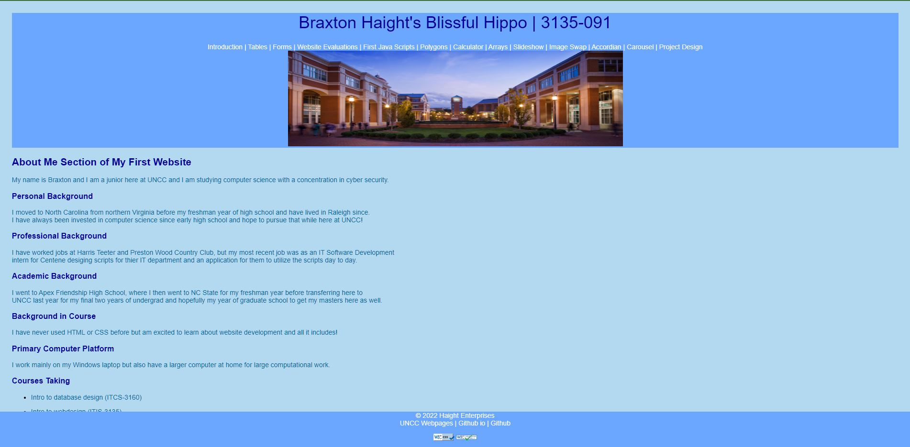

Braxton Haight's Site
Checklist:
-
1. Design
- I like that you stuck with various shades of one color for the site, monochrome looks good. I also like that the site is using the full width of the screen rather than compressing everything to the middle. The footer staying permanently at the bottom of the screen is a nice touch too.
-
2. Header? Main? Footer?
- All are present, along with validation in the footer. Nice job.
-
3. Other Feedback
- There is no home page for the site aside from the introduction page. The nav bar at the top could use a larger margin on the bottom to get it off the UNCC image.